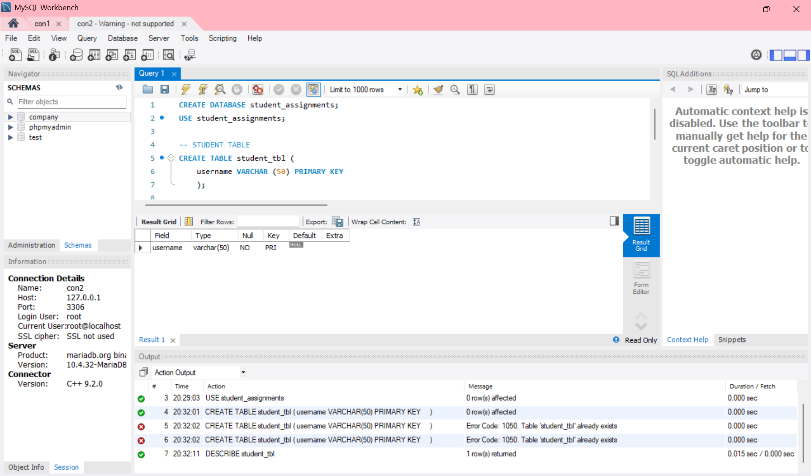

Finals Lab Task 2
Transforming ER Model to Relational Tables
In this lab activity, I changed an ER (Entity-Relationship) model into MySQL tables. The ER model showed how students submit their assignments. I created tables for students, assignments, and submissions. I also added primary and foreign keys to connect the tables properly.
-
Created a new database
- Used
CREATE DATABASEto make the database. - Used
USEto select the database.
- Used
-
Created the main tables
- Student Table – Added student_id, student_name, and email using INT and VARCHAR.
- Assignment Table – Added assignment_id, title, description, and due_date.
- Submission Table – Added submission_id, student_id, assignment_id, and submission_date.
-
Connected the tables
- Used
PRIMARY KEYin each table to set the main ID. - Used
FOREIGN KEYin the Submission table to link it to the Student and Assignment tables. - Added
ON DELETE CASCADEandON UPDATE CASCADEto keep data linked correctly.
- Used
-
Checked the table structure
- Used
DESCRIBEto check each table's design. - Exported the ER Diagram or relational schema from phpMyAdmin or MySQL Workbench.
- Used
Here's the screenshot of my output for the Student's table
Here's the screenshot of my output for the Assignment's table

Here's the screenshot of my output for the Submission's table

Here's the screenshot of my output for the ER Diagram/Relational Schema